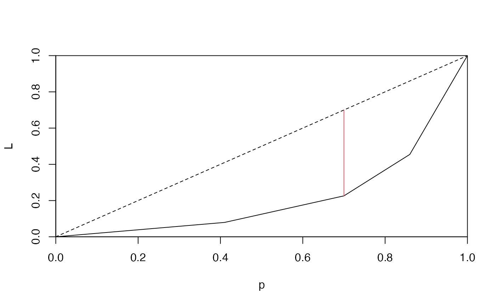

Lorenz Curve Based Thresholds and Partitions
lorenz.RdLorenz curve based thresholds and partitions.
Usage
lorenz(x, n = rep(1, length(x)), na.last = TRUE)
# S3 method for class 'lorenz'
quantile(x, probs = seq(0, 1, 0.25),
type = c("L", "p"), ...)
iquantile(x, ...)
# S3 method for class 'lorenz'
iquantile(x, values,
type = c("L", "p"),...)
# S3 method for class 'lorenz'
plot(x, type = c("L", "x"),
tangent = NA, h = NA, v = NA, ...)
# S3 method for class 'summary.lorenz'
print(x, digits, ...)
# S3 method for class 'lorenz'
summary(object, ...)Arguments
- x
a vector of nonnegative numbers for
lorenz, or an object to plot or summarized.- n
a vector of frequencies, must be same length as
x.- na.last
logical, for controlling the treatment of
NAs. IfTRUE, missing values in the data are put last; ifFALSE, they are put first; ifNA, they are removed (seeorder).- probs
numeric vector of probabilities with values in [0,1], as in
quantile.- values
numeric vector of values for which the corresponding population quantiles are to be returned.
- type
character. For the
plotmethod it indicates whether to plot the cumulative distribution quantiles ("L") or ordered but not-cumulated values ("x"). For thequantileandiquantilemethods it indicates which of the quantiles ("L"or"p") to use.- tangent
color value for the Lorenz-curve tangent when plotted. The default
NAvalue omits the tangent from the plot.- h
color value for the horizontal line for the Lorenz-curve tangent when plotted. The default
NAvalue omits the horizontal line from the plot.- v
color value for the vertical line for the Lorenz-curve tangent when plotted. The default
NAvalue omits the vertical line from the plot.- digits
numeric, number of significant digits in output.
- object
object to summarize.
- ...
other arguments passed to the underlying functions.
Details
The Lorenz curve is a continuous piecewise linear function
representing the distribution of abundance (income, or wealth).
Cumulative portion of the population: \(p_i = i / m\) (\(i=1,...,m\)), vs.
cumulative portion of abundance:
\(L_i = \sum_{j=1}^{i} x_j * n_j / \sum_{j=1}^{n} x_j * n_j\).
where \(x_i\) are indexed in non-decreasing order (\(x_i <= x_{i+1}\)).
By convention, p_0 = L_0 = 0.
n can represent unequal frequencies.
The following charactersitics of the Lorenz curve are calculated:
"t": index where tangent (slope 1) touches the curve;
"x[t]", "p[t]", and "L[t]" are values corresponding to
index t, x_t is the unmodified input.
"S": Lorenz asymmetry coefficient (\(S = p_t + L_t\)),
\(S = 1\) indicates symmetry.
"G": Gini coefficient, 0 is perfect equality,
values close to 1 indicate high inequality.
"J": Youden index is the (largest) distance between the anti-diagonal
and the curve, distance is largest at the tangent point
(\(J = max(p - L) = p_t - L_t\)).
Value
lorenz returns an object of class lorenz. It is a matrix with m+1 rows
(m = length(x)) and 3 columns (p, L, x).
The quantile method finds values of x_i corresponding to
quantiles L_i or p_i (depending on the type argument).
The iquantile (inverse quantile) method
finds quantiles of L_i or p_i corresponding to values of x_i.
The plot method draws a Lorenz curve.
Because the object is a matrix, lines
and points will work for adding multiple lines.
The summary method returns characteristics of the Lorenz curve.
References
Damgaard, C., & Weiner, J. (2000): Describing inequality in plant size or fecundity. Ecology 81:1139–1142. <doi:10.2307/177185>
Schisterman, E. F., Perkins, N. J., Liu, A., & Bondell, H. (2005): Optimal cut-point and its corresponding Youden index to discriminate individuals using pooled blood samples. Epidemiology 16:73–81. <doi:10.1097/01.ede.0000147512.81966.ba>
Youden, W. J. (1950): Index for rating diagnostic tests. Cancer 3:32–5. <doi:10.1002/1097-0142(1950)3:1<32::AID-CNCR2820030106>3.0.CO;2-3>
Examples
set.seed(1)
x <- c(rexp(100, 10), rexp(200, 1))
l <- lorenz(x)
head(l)
#> p L x
#> [1,] 0.000000000 0.000000e+00 0.000000000
#> [2,] 0.003333333 8.256055e-06 0.001700975
#> [3,] 0.006666667 2.634516e-05 0.003726853
#> [4,] 0.010000000 4.819482e-05 0.004501631
#> [5,] 0.013333333 7.346108e-05 0.005205545
#> [6,] 0.016666667 1.008080e-04 0.005634216
tail(l)
#> p L x
#> [296,] 0.9833333 0.8954549 3.173340
#> [297,] 0.9866667 0.9112748 3.259337
#> [298,] 0.9900000 0.9279782 3.441357
#> [299,] 0.9933333 0.9470105 3.921174
#> [300,] 0.9966667 0.9692697 4.586020
#> [301,] 1.0000000 1.0000000 6.331284
summary(l)
#> Lorenz curve summary
#>
#> x[t] p[t] L[t] G S J
#> 0.6827 0.6433 0.1934 0.5909 0.8367 0.4500
#>
summary(unclass(l))
#> p L x
#> Min. :0.00 Min. :0.00000 Min. :0.00000
#> 1st Qu.:0.25 1st Qu.:0.01708 1st Qu.:0.09968
#> Median :0.50 Median :0.08771 Median :0.36917
#> Mean :0.50 Mean :0.20551 Mean :0.68448
#> 3rd Qu.:0.75 3rd Qu.:0.32198 3rd Qu.:1.01262
#> Max. :1.00 Max. :1.00000 Max. :6.33128
(q <- c(0.05, 0.5, 0.95))
#> [1] 0.05 0.50 0.95
(p_i <- quantile(l, probs=q, type="p"))
#> 5% 50% 95%
#> 0.02035104 0.36917103 2.25115270
iquantile(l, values=p_i, type="p")
#> 0.02035104 0.36917103 2.25115270
#> 0.05 0.50 0.95
(p_i <- quantile(l, probs=q, type="L"))
#> 5% 50% 95%
#> 0.2198279 1.4773854 4.5860202
iquantile(l, values=p_i, type="L")
#> 0.2198279 1.4773854 4.5860202
#> 0.05039184 0.50430635 0.96926972
op <- par(mfrow=c(2,1))
plot(l, lwd=2, tangent=2, h=3, v=4)
abline(0, 1, lty=2, col="grey")
abline(1, -1, lty=2, col="grey")
plot(l, type="x", lwd=2, h=3, v=4)
par(op)
## Lorenz-tangent approach to binarize a multi-level problem
n <- 100
g <- as.factor(sort(sample(LETTERS[1:4], n, replace=TRUE, prob=4:1)))
x <- rpois(n, exp(as.integer(g)))
mu <- aggregate(x, list(g), mean)
(l <- lorenz(mu$x, table(g)))
#> p L x
#> 0.00 0.00000000 0.000000
#> A 0.41 0.07932011 2.731707
#> B 0.70 0.22592068 7.137931
#> C 0.86 0.45467422 20.187500
#> D 1.00 1.00000000 55.000000
#> attr(,"summary")
#> t x[t] p[t] L[t] G S J
#> 3.0000000 7.1379310 0.7000000 0.2259207 0.3700425 0.9259207 0.4740793
#> attr(,"class")
#> [1] "lorenz" "matrix"
(s <- summary(l))
#> Lorenz curve summary
#>
#> x[t] p[t] L[t] G S J
#> 7.1379 0.7000 0.2259 0.3700 0.9259 0.4741
#>
plot(l)
abline(0, 1, lty=2)
lines(rep(s["p[t]"], 2), c(s["p[t]"], s["L[t]"]), col=2)
